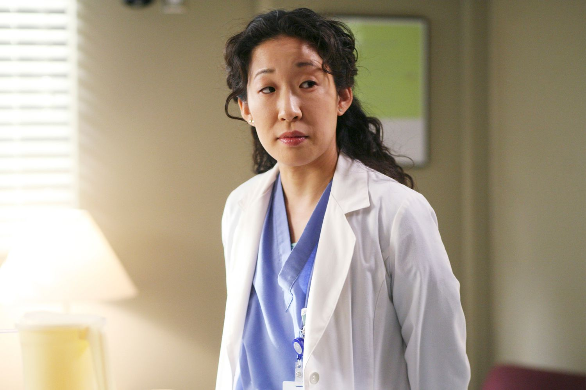
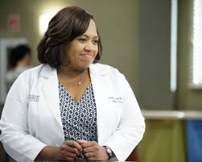
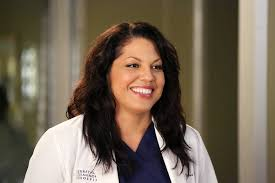
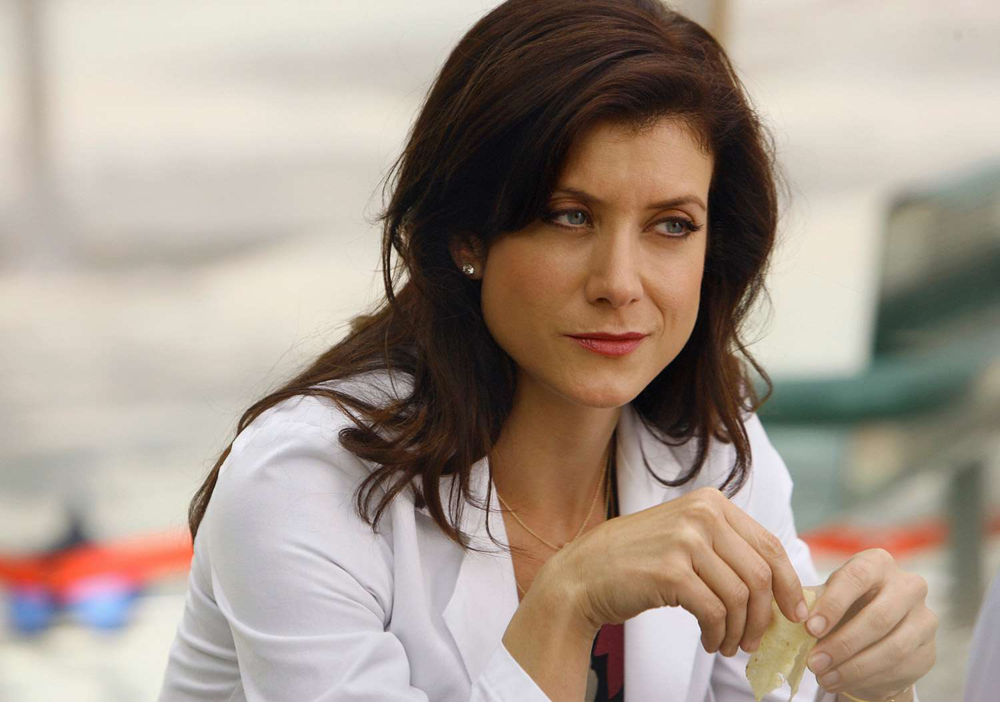
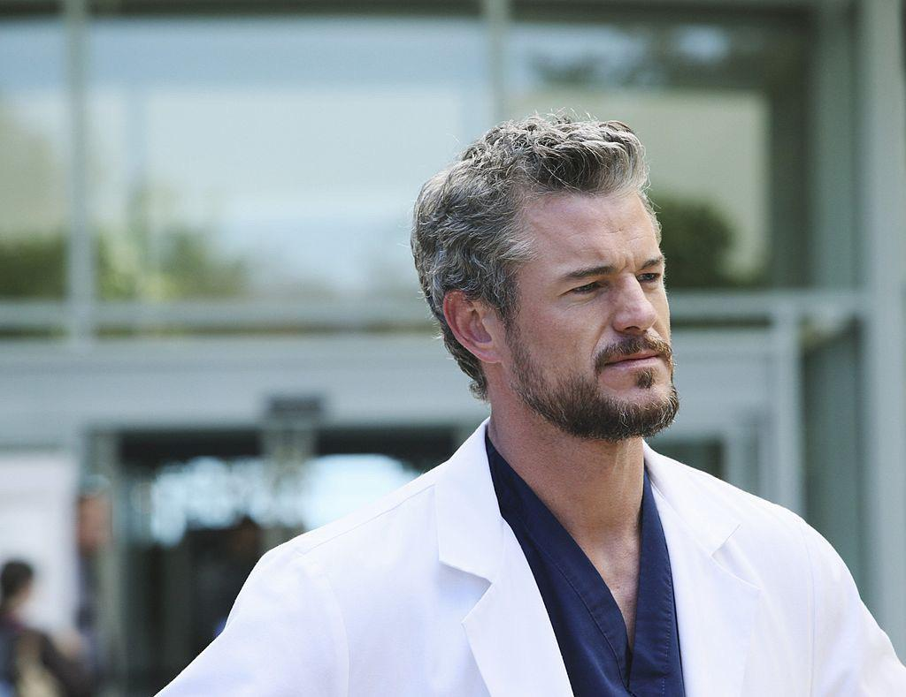

Meredith Grey
As the heart and soul of Grey's Anatomy, Meredith Grey is beloved for her growth, resilience, and emotional depth. From the very first season, viewers watch as she transforms from an awkward, grieving intern to a strong, accomplished surgeon and loving mother. Her complex relationships, particularly with Derek and her emotional struggles, resonate with fans, making her an iconic and relatable character.
Alex Karev
Alex’s journey is one of the most rewarding arcs on the show. Starting off as a brash, arrogant intern, Alex matures into a compassionate and caring doctor. His loyalty to his friends and growth as a person—especially in his relationships with Izzie and Jo—make him one of the most beloved characters. Alex's transformation from a troubled, defensive character into someone who deeply cares about others is one of the show's greatest achievements.
Christina Yang
Cristina’s ambition, intelligence, and fierce determination set her apart as one of the most powerful characters. While she may struggle with emotional connections, her unwavering focus on her career and her friendship with Meredith make her an iconic figure. Cristina’s journey of self-discovery, her boldness, and her refusal to be anything other than herself make her a fan favorite.
Miranda Bailey
Bailey, known for her tough-love mentorship and remarkable strength, is one of the show’s most inspirational characters. Starting as the no-nonsense "Nazist" intern, she evolves into a powerful surgeon, respected leader, and loving mother. Her ability to balance a high-pressure career with her personal life, while always maintaining her values and compassion, makes her a role model for fans.
Callie Torres
Callie is a character marked by strength, resilience, andy to navigate complex relationships with grace. As one of the first openly bisexual characters on television, Callie’s journey is both groundbreaking and heartfelt. Her evolution from a conflicted wife to an independent and empowered woman adds immense depth to her character, making her a trailblazer for representation and an inspiration to many.
Lexie Grey
Lexie is remembered for her intelligence, warmth, and her underdog story. As Meredith’s half-sister, she struggles to find her place, but her dedication to her work and her relationships make her a beloved character. Lexie’s growth as a surgeon, her emotional depth, and her tragic end leave a lasting impact, showcasing her as a character who was full of potential and heart.

Derek Shepherd
Derek, or "McDreamy," is one of the most memorable characters on the show. His charm, professionalism, and deep love for Meredith make him an ideal partner and father figure. Derek’s journey as a neurosurgeon, his moral compass, and his devotion to Meredith make him a fan favorite, representing the balance between career success and personal fulfillment.
Addison Montgomery
Addison’s complex character is beloved for her growth from the "other woman" to a strong, independent surgeon in her own right. Her intelligence, professionalism, and vulnerability make her a standout character. Addison's emotional complexity, particularly in her relationships with Derek and Mark, shows her as a multi-dimensional figure who proves that a strong woman can overcome her past and reinvent herself.
Mark Sloan
Mark, aka "McSteamy," is adored for his charm, wit, and growth throughout the series. Initially portrayed as the womanizing plastic surgeon, Mark becomes one of the most beloved characters due to his emotional depth and loyalty, especially in his relationships with Lexie and Callie. His comedic timing, as well as his moments of vulnerability, make him a complex and endearing figure.
Stephanie Edwards
Stephanie is often praised for her determination, intelligence, and her bright, optimistic personality. As a dedicated and skilled surgeon, she brings a refreshing energy to the hospital. Her loyalty to her friends and her growth as a person throughout the series make her a standout character, even though her time on the show was shorter compared to others. Stephanie's resilience and ability to rise above challenges make her an inspiring figure for fans.